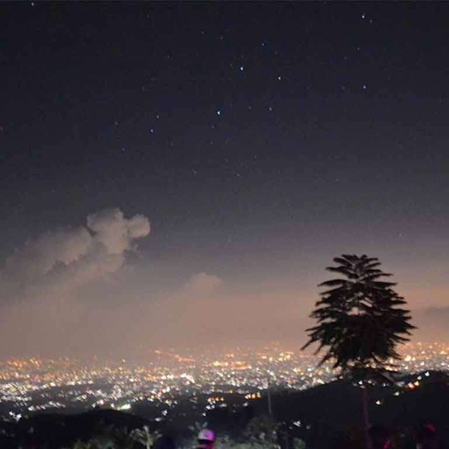
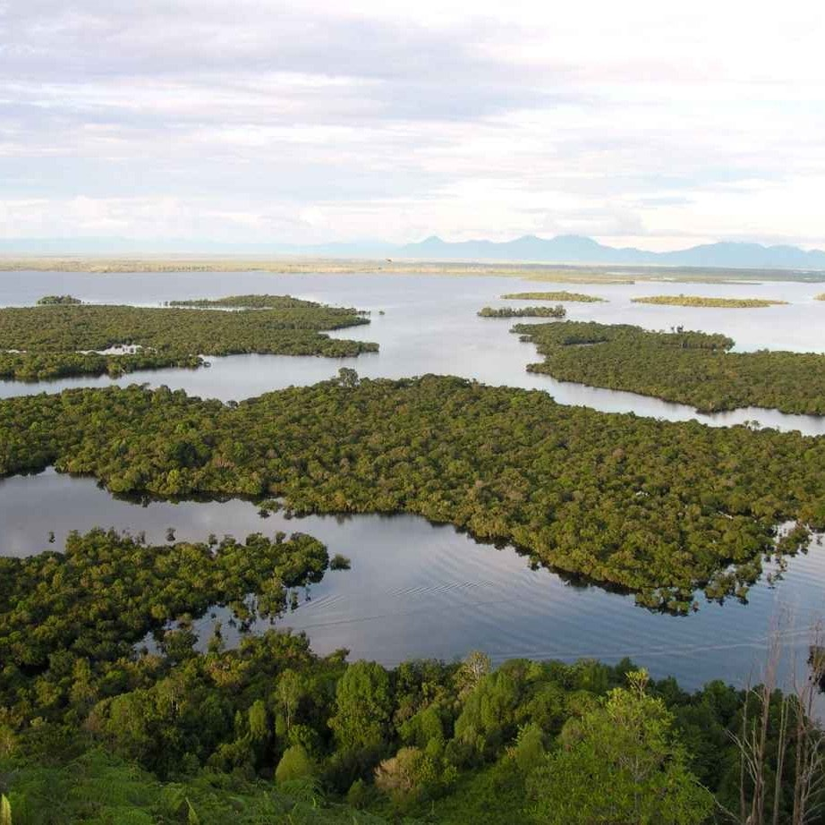

Bukit Moko
Biasanya, saat siang menuju sore hari menjadi waktu yang tepat untuk trekking di jalur hutan pinus Bukit Moko. Bukit Moko juga memiliki banyak sekali resto dan kedai untuk sekadar nongkrong.

Danau Sentarum
Danau Sentarum adalah danau musiman yang berada di Kapuas Hulu, Kalimantan Barat. Danau ini dipenuhi air selama 10 bulan setiap tahunnya, dan sisanya akan surut, membentuk kolam-kolam kecil yang berisi ikan-ikan kecil.

Ranca Upas
Destinasi yang dikelola oleh Perum Perhutani ini dulu bernama Bumi Perkemahan Ranca Upas, lokasi untuk berkemah tempat penangkaran rusa. Belakangan ditambah dengan nama Kampung Cai. Ini berkaitan dengantelah dibangunnya kolam renang air panas, yang bersumber dari gunung Patuha.